STEP 01いつでも・どこでも・何度でも
いつでも・どこでも・何度でも
eラーニングで基礎を学ぶ
座学はeラーニングで学習。時間や場所を選ばず、分からない部分を繰り返し復習できます。学習状況は講師も確認し、理解度に合わせてフォローします。
基礎から実践まで
整体師への一歩を ここから
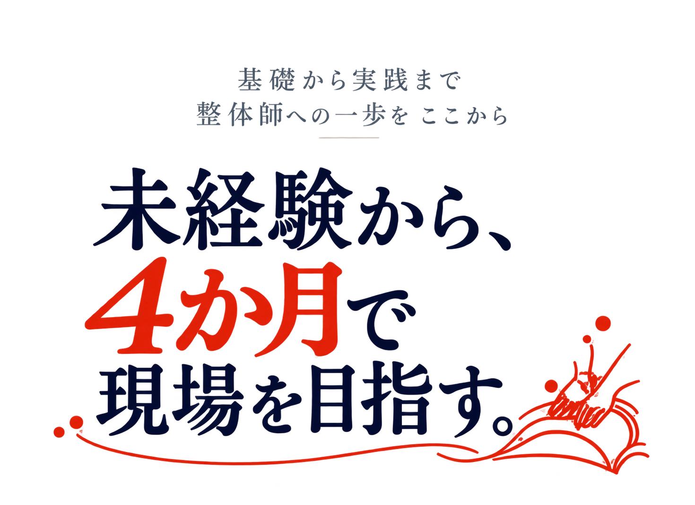
働きながらでも学びやすい。

その手に、仕事につながる技術を。
基礎から実践まで。整体師への一歩を、ここから。
4か月で、
仕事につながる学び。
01 A LITTLE FIRST STEP
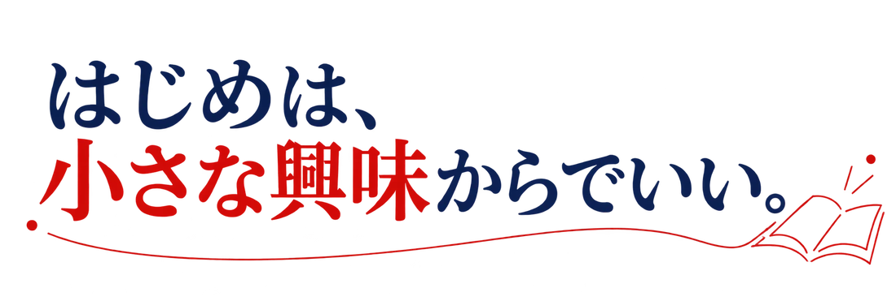
未経験から始めた方
約 8 割
同じスタートの
仲間がいる。
だから、一歩を
踏み出しやすい。
※受講生構成の概算値（未経験者約78%）です。時期により変動します。
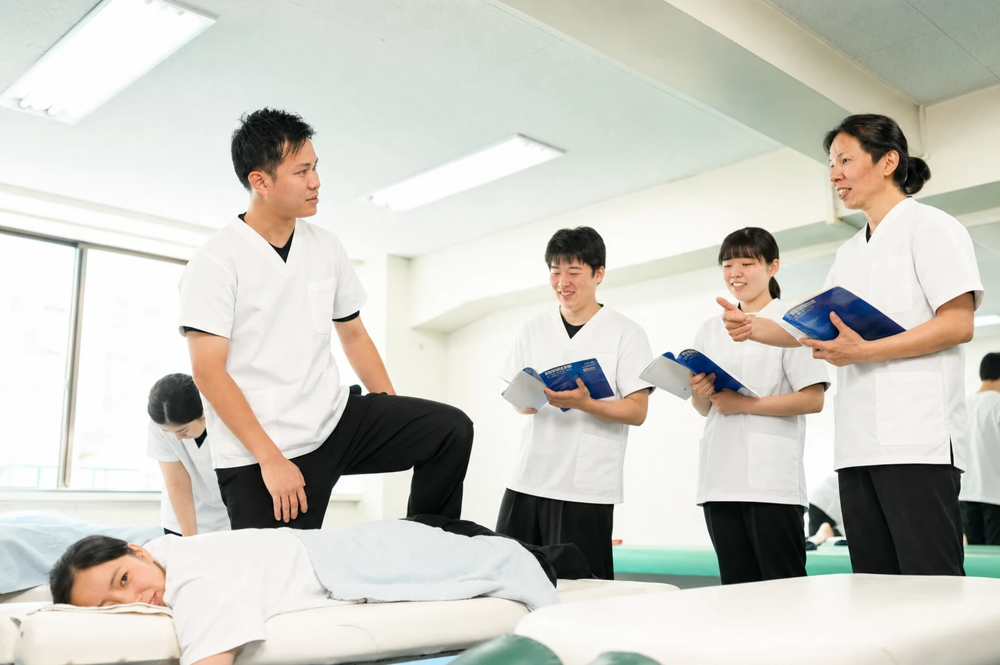
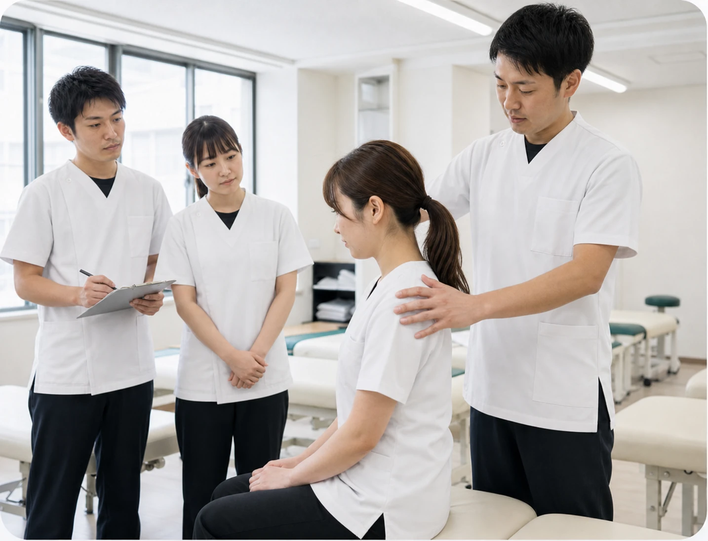
「人に喜ばれる仕事がしたい」「手に職をつけたい」。その気持ちを、一歩につなげる学校です。経験や年齢にかかわらず、基礎から一つずつ、一緒に学んでいきます。
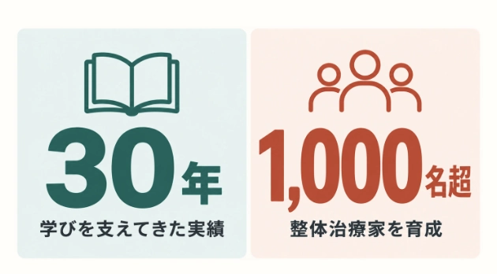
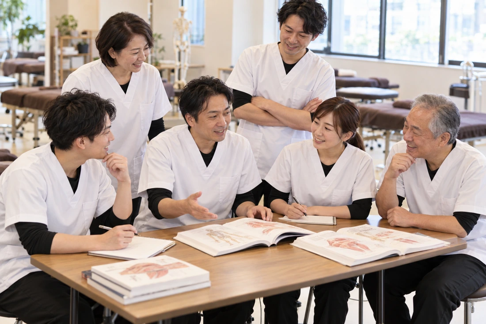
30代・40代を中心に、20代から60代以上まで。会社員、自営業、医療・福祉職、主婦・学生など、さまざまな方が学んでいます。
男性約63%・女性約37%。前職や性別を問わず、将来の選択肢を広げています。
02 LEARN, PRACTICE, GROW
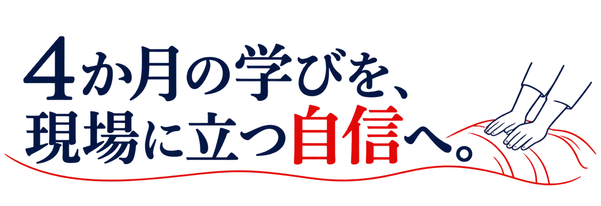
知識・実技・現場経験をつなげ、仕事で活かせる力を育てます。
座学はeラーニングで学習。時間や場所を選ばず、分からない部分を繰り返し復習できます。学習状況は講師も確認し、理解度に合わせてフォローします。

手の位置、圧の方向、身体の使い方まで講師が丁寧に確認。デモンストレーションと反復練習を繰り返し、分からない点はその場で一緒に確認し、納得して次へ進めるようサポートします。

目の前の症状だけでなく、身体の状態や生活習慣まで確認し、その人に合った施術を考えます。未病や予防の視点も取り入れ、健康を長く支えるための考え方を学びます。
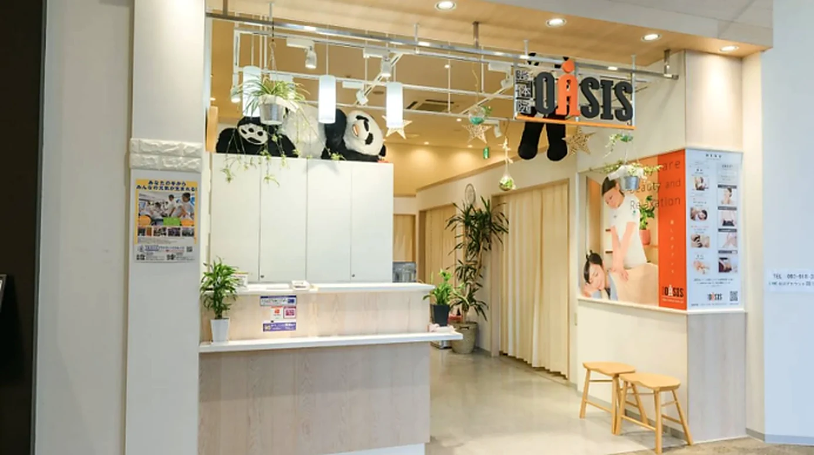
PLUS / 現場で学ぶ
提携先の現場で、施術前のヒアリング、接客、予約対応などを学びます。現場責任者からのフィードバックを通して、学んだ技術を実務につなげます。
03 YOUR NEXT CHAPTER
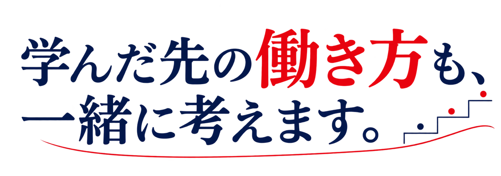
技術を身につけることは、新しいスタート。就職・副業・独立など、あなたが目指す働き方に合わせてサポートします。
現場で求められる技術と接客力を身につけ、即戦力としてキャリアを始める。

本業を続けながら、休日や空き時間に技術を活かす。

柔道整復師、トレーナー、セラピストなど、現在の専門性に新しい手技を加える。
 01
01ご希望に合わせた就職先紹介と、面談準備を支援します。
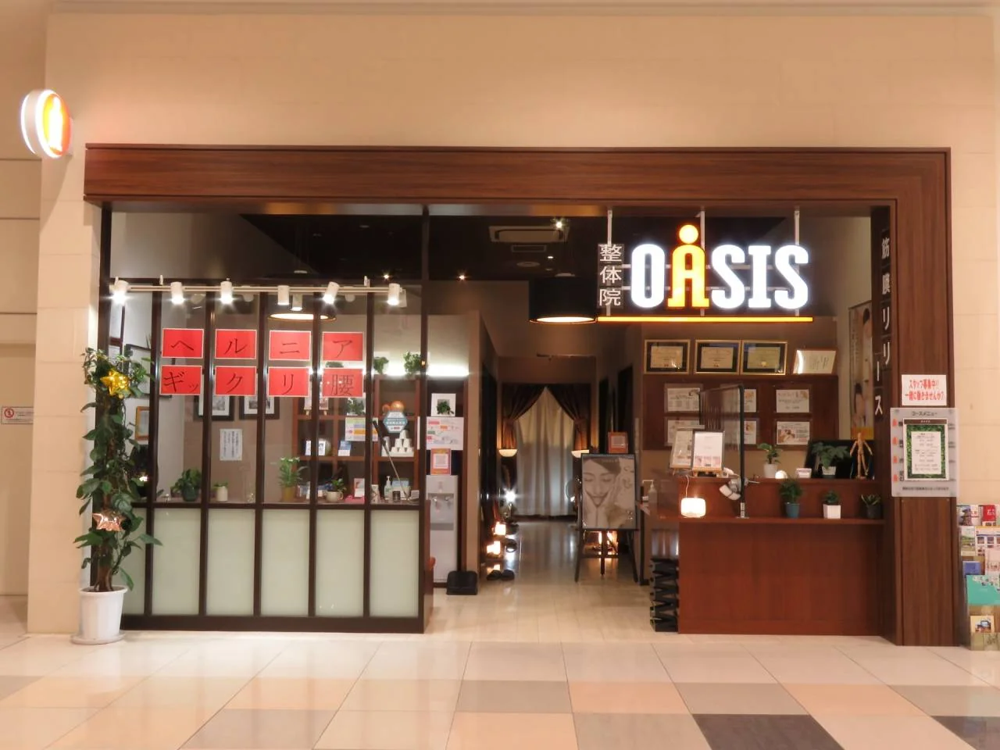
02独立を目指す方に向けたセミナーや勉強会、個別面談も実施しております。
整体院OASIS、骨盤メディカル整骨院、げんき堂整体院・整骨院・鍼灸院、エステティックTBC、ほぐしテック、GENKI Plusなど。
4か月後の自分を、少し想像できたら。
無料で資料を取り寄せる学び方や費用を、ご自宅でゆっくり。04 FIND YOUR COURSE
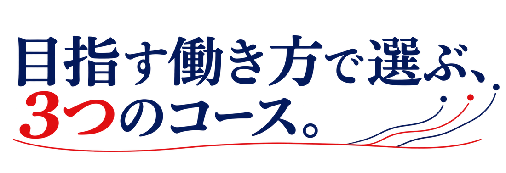
就職を目指す方から、独立開業を考える方まで。習得したい技術と目標に合わせて選べます。
 COURSE 01 / 初級
COURSE 01 / 初級予防や健康維持を目的とした、全身を整えるウェルネス整体を習得できる、就職を希望する方のためのコース。
※教育ローンをご利用いただけます。

学びの成果を、
認定資格として。
 COURSE 02 / 初級＋中級
COURSE 02 / 初級＋中級全身を整えるウェルネス整体に加え、カイロプラクティック治療（アクチベータテクニック）を習得し、就職を希望する方のためのコース。
※教育ローンをご利用いただけます。

学びの成果を、
認定資格として。
 COURSE 03 / 初級・中級・上級
COURSE 03 / 初級・中級・上級全身を整えるウェルネス整体とカイロプラクティック治療を総合的に習得し、近い未来に独立開業を希望する方のためのコース。
※教育ローンをご利用いただけます。
学びの成果を、
認定資格として。
迷ったら、個別説明会でご相談ください。
今の経験や目標に合わせてご案内します。
経験者向け・受講の流れ
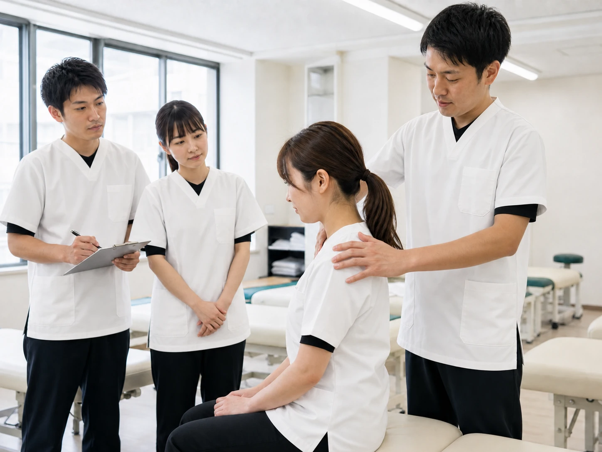
柔道整復師、鍼灸師、理学療法士（PT）、作業療法士（OT）、アスレティックトレーナー（AT）などの資格をお持ちの方や、施術経験のある独立開業者を対象としています。
予約制・1回6名まで。技術が身につくまで、何度でも繰り返し受講できます。
自費施術の幅を広げたい方へ。まずは1か月・計12時間で基本テクニックを学びます。専門セミナーをご希望の方も、最初にこの基本セミナーをご受講ください。
基本セミナー（12時間）と専門セミナーを組み合わせたプランです。
基本＋専門4セミナー：修了証書発行は別料金。
お支払い：カードまたは現金一括払い。
05 PEOPLE WHO SUPPORT YOU
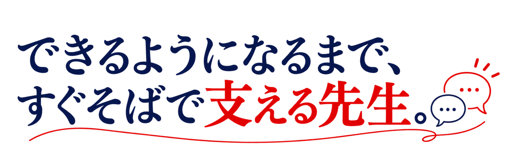
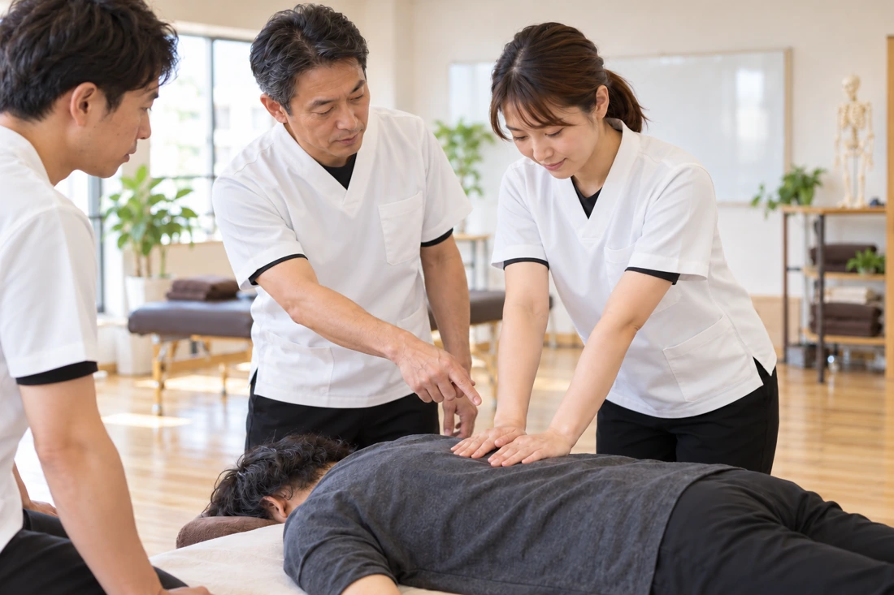
現場を知る有資格者のプロ講師8名が在籍。技術だけでなく、一人ひとりと向き合う姿勢も伝えます。

学院長
整体では、姿勢や関節の動き、筋肉の状態を確認し、身体のバランスを整えることで、不調の緩和や動きやすい身体づくりを支えます。施術だけでなく、身体の状態を分かりやすく説明し、生活習慣や姿勢について助言できることも大切な技術です。
公認資格は、知識と技術を段階的に学んだことを示す一つの目安になります。実習を通して、一人ひとり異なる身体や感覚に合わせた力加減や施術方法を身につけていきます。
患者様に納得して施術を受けていただき、「ここに来てよかった」と喜んでもらえる施術者を、一緒に目指しましょう。

リラクゼーションテクニック講師
整体の仕事は、女性が十分に活躍できる業界です。大切なのは、力の強さではなく、正しい知識と技術を身につけ、一人ひとりの身体に合わせて施術することです。
施術の手順から身体に合わせた力加減まで、繰り返し練習しながら無理なく身につけていきます。
だからこそ、ただ手順を教えるだけではなく、一つひとつの動きや力の加え方を丁寧に指導します。未経験の方にも着実に技術を身につけていただけるよう、しっかりとサポートしていきます。

テクニック講師
31歳・未経験から整体の世界へ飛び込んだ講師の高口です。「人に直接喜ばれる仕事がしたい」という興味から始めましたが、お客様から直接「ありがとう」と言っていただける感動は、何にも代え難いものです。この仕事は、培ってきた人間力や前職の経験がすべて活きるため、挑戦するのに遅すぎることはありません。
講義では、基本を丁寧に学んでいただくことを大切にしながらも、私が現場で実際に悩み、工夫して乗り越えてきた「リアルな経験」を惜しみなくお伝えします。今も現場に立つ私だからこそ、現場での経験も交えながら、実践につながる学びを丁寧にお伝えします。卒業後も、何でも相談ができる「頼れる先輩」として寄り添いますので、新しい扉を一緒に開いてみましょう。
日本や世界で活躍できる技術者を目指す皆さんに、寄り添いながら学びを支えます。
人に喜ばれ、世の中に必要とされる仕事です。一人ひとりのペースを大切にしながら、安心して学びを続けられるようサポートします。
これが日本整体師育成専門学院が、一番大切にしていることです。
順天堂大学医学部卒業 順天堂大学病院整形外科勤務し、現在上牧温泉病院院長
人生100年時代を迎えた今、健康に対する考え方は大きく変化しています。病気や痛みが現れてから施術を行うだけではなく、その前段階から身体の状態を整え、健康を維持・増進していく「予防」の重要性がますます高まっています。
そのような社会の中で、整体師には身体の変化に気づき、健康づくりを支える身近な専門家としての役割が期待されています。利用される方の身体の状態を把握し、安全に配慮した施術を提供するとともに、健康への意識を高めるきっかけをつくる存在として、その価値は今後さらに高まっていくでしょう。
日本整体師育成専門学院では、実践的な技術だけでなく、身体の構造や機能、安全管理、施術者として求められる責任や倫理についても体系的に学ぶことができます。
MIA法律事務所 代表弁護士／医師
人の健康に携わるうえでは、単に施術技術を身につけるだけでなく、一人ひとりの身体の状態や生活背景にも目を向け、身体について正しく考える力を養うことが大切です。
近年、健康寿命の延伸や健康維持への関心が高まり、症状が生じた際の治療だけでなく、日頃から自身の身体に関心を持ち、健康を維持していくことの重要性も広く認識されるようになりました。そのような中、地域の方々の健康づくりに身近な立場から関わる整体師の役割も、今後ますます重要になっていくものと思います。
日本整体師育成専門学院では、実践を意識した施術技術に加え、解剖学をはじめとする身体の仕組みに関する知識、安全管理、施術者として求められる倫理観など、施術に携わるうえで大切な内容を幅広く学ぶことができると伺っています。
06 FROM OUR GRADUATES
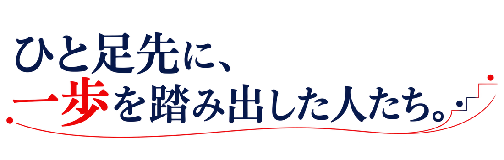

整体院OASIS筑紫野院
整体師
縄田 菊恵先生
入学前は、知識も経験もない自分が授業についていけるのか、本当に整体師になれるのか不安でした。しかし、基礎から丁寧に学び、先生方に一つひとつ教えていただく中で、できることが少しずつ増えていきました。実技を重ねるうちに不安も解消され、自信を持って施術に向き合えるようになりました。
MIRYO整体院
美容整体師／公認カイロプラクター／院長
下田 亮先生
日本整体師育成専門学院で、身体の仕組みと施術の基礎を学び、技術だけでなく一人ひとりに寄り添う姿勢を身につけました。現在はMIRYO整体院で、美容整体師・公認カイロプラクターとして、健康と美しさを支える施術に取り組んでいます。学びを現場で活かしながら、信頼される整体師を目指しています。

整体院OASIS イオンモール新利府
整体師
佐藤 留美先生
日本整体師育成専門学院では、基礎から現場で役立つ技術まで、一つひとつ丁寧に学ぶことができました。先生方との距離も近く、分からないことをすぐに相談できる環境です。人に喜ばれる仕事を目指す方に、安心して学べる学校だと思います。

すまいる整体院
院長
中西 雄二郎先生
26歳で日本整体師育成専門学院に入学し、施術技術だけでなく、患者様との向き合い方や仕事への姿勢まで学びました。実践を重ねながら成長できる環境があり、未経験でも目標に向かって進めます。施術者を目指す方に、安心しておすすめできる学校です。
07 QUESTIONS & ANSWERS
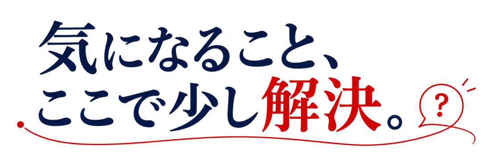
未経験から安心して学べるカリキュラムです。基礎知識と基本手技から段階的に学び、必要な知識と技術を一つひとつ身につけていきます。
午前・昼間・夜間から、お仕事に合わせて受講時間をお選びいただけます。
少人数の反復実技と現場研修を組み合わせ、即戦力化を目指します。ただし、到達度は受講状況や個人差によって異なります。
系列・提携治療院への紹介や、面談準備などを通してサポートします。ご希望を丁寧に伺い、一人ひとりに合った進路をご提案します。
独立を目指す方に向けたセミナー、勉強会、個別面談を実施しています。まずは目指したい働き方をお聞かせください。
08 LET’S TALK
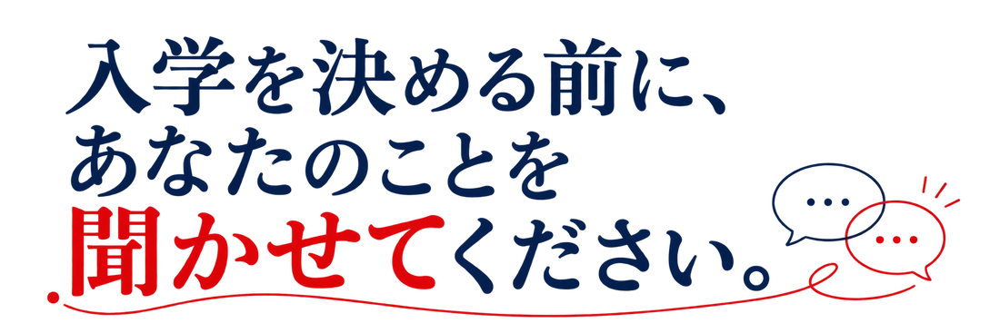
「働きながら通える？」「自分に合うコースは？」。まだ具体的に決まっていなくても大丈夫です。資料請求や個別説明会から、気になることを確かめてみませんか。
コース・受講料・学習内容を見比べながら、自分に合う学び方を考えられます。
目標や生活スタイルを伺い、受講時間やコース選びについてご案内します。
受講の進め方や費用、お申し込みに関することまで、お気軽にお尋ねください。
YOUR FIRST STEP
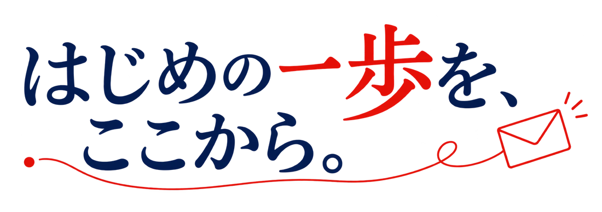
資料請求・個別説明会のお申し込み
専門セミナーのお問い合わせ